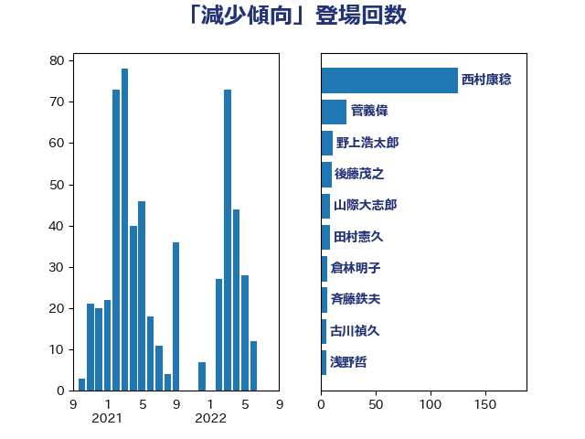

単語「減少傾向」

| 西村康稔 | 自由民主党 | 125 回 |
| 菅義偉 | 自由民主党 | 24 回 |
| 野上浩太郎 | 自由民主党 | 11 回 |
| 後藤茂之 | 自由民主党 | 10 回 |
| 山際大志郎 | 自由民主党 | 9 回 |
| 田村憲久 | 自由民主党 | 9 回 |
| 倉林明子 | 日本共産党 | 6 回 |
| 斉藤鉄夫 | 公明党 | 6 回 |
| 古川禎久 | 自由民主党 | 5 回 |
| 浅野哲 | 国民民主党 | 5 回 |
| 田村智子 | 日本共産党 | 5 回 |
| 上川陽子 | 自由民主党 | 4 回 |
| 川合孝典 | 国民民主党 | 4 回 |
| 武部新 | 自由民主党 | 4 回 |
| おおつき紅葉 | 立憲民主党 | 3 回 |
| 安江伸夫 | 公明党 | 3 回 |
| 武田良太 | 自由民主党 | 3 回 |
| 田村貴昭 | 日本共産党 | 3 回 |
| 紙智子 | 日本共産党 | 3 回 |
| 中島克仁 | 立憲民主党 | 2 回 |
| 中川宏昌 | 公明党 | 2 回 |
| 井上信治 | 自由民主党 | 2 回 |
| 伊藤孝恵 | 国民民主党 | 2 回 |
| 佐藤英道 | 公明党 | 2 回 |
| 古賀友一郎 | 自由民主党 | 2 回 |
| 吉田とも代 | 日本維新の会 | 2 回 |
| 吉良よし子 | 日本共産党 | 2 回 |
| 塩村あやか | 立憲民主党 | 2 回 |
| 宮口治子 | 立憲民主党 | 2 回 |
| 岸信夫 | 自由民主党 | 2 回 |
| 杉尾秀哉 | 立憲民主党 | 2 回 |
| 東徹 | 日本維新の会 | 2 回 |
| 森屋隆 | 立憲民主党 | 2 回 |
| 橋本岳 | 自由民主党 | 2 回 |
| 浜野喜史 | 国民民主党 | 2 回 |
| 源馬謙太郎 | 立憲民主党 | 2 回 |
| 玉木雄一郎 | 国民民主党 | 2 回 |
| 田村まみ | 国民民主党 | 2 回 |
| 篠原豪 | 立憲民主党 | 2 回 |
| 船橋利実 | 自由民主党 | 2 回 |
| 谷川とむ | 自由民主党 | 2 回 |
| 野中厚 | 自由民主党 | 2 回 |
| 野田聖子 | 自由民主党 | 2 回 |
| 金城泰邦 | 公明党 | 2 回 |
| 須藤元気 | 無所属 | 2 回 |
| 高橋千鶴子 | 日本共産党 | 2 回 |
| 三原じゅん子 | 自由民主党 | 1 回 |
| 中司宏 | 日本維新の会 | 1 回 |
| 中谷一馬 | 立憲民主党 | 1 回 |
| 井上哲士 | 日本共産党 | 1 回 |
| 井野俊郎 | 自由民主党 | 1 回 |
| 伊藤俊輔 | 立憲民主党 | 1 回 |
| 伊藤孝江 | 公明党 | 1 回 |
| 住吉寛紀 | 日本維新の会 | 1 回 |
| 佐藤茂樹 | 公明党 | 1 回 |
| 加藤竜祥 | 自由民主党 | 1 回 |
| 古屋範子 | 公明党 | 1 回 |
| 吉田宣弘 | 公明党 | 1 回 |
| 和田義明 | 自由民主党 | 1 回 |
| 坂本哲志 | 自由民主党 | 1 回 |
| 塩川鉄也 | 日本共産党 | 1 回 |
| 塩田博昭 | 公明党 | 1 回 |
| 大串正樹 | 自由民主党 | 1 回 |
| 大島敦 | 立憲民主党 | 1 回 |
| 寺田静 | 無所属 | 1 回 |
| 小山展弘 | 立憲民主党 | 1 回 |
| 小林鷹之 | 自由民主党 | 1 回 |
| 小沢雅仁 | 立憲民主党 | 1 回 |
| 小野田紀美 | 自由民主党 | 1 回 |
| 山口晋 | 自由民主党 | 1 回 |
| 山口那津男 | 公明党 | 1 回 |
| 山添拓 | 日本共産党 | 1 回 |
| 岡本三成 | 公明党 | 1 回 |
| 平林晃 | 公明党 | 1 回 |
| 平沢勝栄 | 自由民主党 | 1 回 |
| 徳永エリ | 立憲民主党 | 1 回 |
| 斎藤嘉隆 | 立憲民主党 | 1 回 |
| 末松信介 | 自由民主党 | 1 回 |
| 本田太郎 | 自由民主党 | 1 回 |
| 杉久武 | 公明党 | 1 回 |
| 杉田水脈 | 自由民主党 | 1 回 |
| 松野博一 | 自由民主党 | 1 回 |
| 枝野幸男 | 立憲民主党 | 1 回 |
| 柴田巧 | 日本維新の会 | 1 回 |
| 横沢高徳 | 立憲民主党 | 1 回 |
| 武井俊輔 | 自由民主党 | 1 回 |
| 江島潔 | 自由民主党 | 1 回 |
| 河西宏一 | 公明党 | 1 回 |
| 浅田均 | 日本維新の会 | 1 回 |
| 浜口誠 | 国民民主党 | 1 回 |
| 浜地雅一 | 公明党 | 1 回 |
| 深澤陽一 | 自由民主党 | 1 回 |
| 渡辺孝一 | 自由民主党 | 1 回 |
| 渡辺猛之 | 自由民主党 | 1 回 |
| 漆間譲司 | 日本維新の会 | 1 回 |
| 玄葉光一郎 | 立憲民主党 | 1 回 |
| 田名部匡代 | 立憲民主党 | 1 回 |
| 田畑裕明 | 自由民主党 | 1 回 |
| 石井浩郎 | 自由民主党 | 1 回 |
| 石井章 | 日本維新の会 | 1 回 |
| 石井苗子 | 日本維新の会 | 1 回 |
| 石垣のりこ | 立憲民主党 | 1 回 |
| 石川香織 | 立憲民主党 | 1 回 |
| 磯崎仁彦 | 自由民主党 | 1 回 |
| 福岡資麿 | 自由民主党 | 1 回 |
| 福重隆浩 | 公明党 | 1 回 |
| 稲富修二 | 立憲民主党 | 1 回 |
| 穀田恵二 | 日本共産党 | 1 回 |
| 竹内真二 | 公明党 | 1 回 |
| 竹内譲 | 公明党 | 1 回 |
| 竹谷とし子 | 公明党 | 1 回 |
| 緑川貴士 | 立憲民主党 | 1 回 |
| 美延映夫 | 日本維新の会 | 1 回 |
| 舟山康江 | 国民民主党 | 1 回 |
| 舩後靖彦 | れいわ新選組 | 1 回 |
| 菊田真紀子 | 立憲民主党 | 1 回 |
| 萩生田光一 | 自由民主党 | 1 回 |
| 葉梨康弘 | 自由民主党 | 1 回 |
| 西岡秀子 | 国民民主党 | 1 回 |
| 西銘恒三郎 | 自由民主党 | 1 回 |
| 赤嶺政賢 | 日本共産党 | 1 回 |
| 赤羽一嘉 | 公明党 | 1 回 |
| 辻清人 | 自由民主党 | 1 回 |
| 酒井庸行 | 自由民主党 | 1 回 |
| 野間健 | 立憲民主党 | 1 回 |
| 金子恵美 | 立憲民主党 | 1 回 |
| 鈴木俊一 | 自由民主党 | 1 回 |
| 鈴木敦 | 国民民主党 | 1 回 |
| 長友慎治 | 国民民主党 | 1 回 |
| 阿部司 | 日本維新の会 | 1 回 |
| 青山大人 | 立憲民主党 | 1 回 |
| 音喜多駿 | 日本維新の会 | 1 回 |
| 高橋はるみ | 自由民主党 | 1 回 |